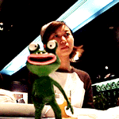
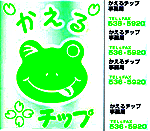
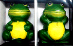

モロー君の全身像売り出し迫る！ 【東京発=モロー寺井同志記者】モロー君人形の全身サイズが量産体制に入りました。みなさんのお手元に届くのも間もなくと思います。福岡かえる展の会場で、製造販売したところ、意外にもたくさんの人が買ってくれたので、昼夜兼行で生産しています。といっても、本業の合間に、来る日も来る日も、モロー君の濃い顔を作り続けるのは、大変な労力なのであるー。
【福岡かえる展事務局】売り出しは、福岡かえる展公式ページで、行う予定だけど、なにしろすべてが手作りなので、個体差がある。そこで、全てのモロー君を画像で公開し、受注するつもりです。みなさん、もうしばらく待ってね。８月上旬にモロー君全身像の分譲開始だ。！！
新カエル都市・立川市に、カエルチップ登場！ 【東京発=まこ助同志記者】こんにちは、まこ助ですm(__)m。19日のかえる新聞に立川の「かえる美容室」と「カエル教室」の記事が載ってたので、さらに立川かえる情報です。 今年の5月から、東京都立川市のけやき台団地近くの商店街で、「かえるチップ」という企画がスタートしたようです。100円毎にシールが1枚以上貰えて、300枚ためると加盟店で500円分の商品と引き換えられるようです。 …やっぱり、もしかして、裏で立川かえるタウン化計画でも進んでるんでしょーか
愛称けろちゃん！イチゴミルクが好き！【全国かえる奉賛会】まこ助同志記者から受け取った画像には、『買い物１００円ごとに最低一枚。かえるチップに有効期限はありません』などの説明のほかに、次のようなプロフィールが記入していたのだ。●なまえ-ケロちゃん●性別--おす●年齢--７歳●性格--お祭り好き！一本気！●住んでいるところ--玉川上水●話す言葉--ケロタン語●好きなもの--イチゴミルク●嫌いなもの--かみなり●趣味特技--ひなたぼっこ、水泳、ケロオケ●座右の銘--ケロッと忘れろ！跳ねるが勝ち！ それにしても、立川市のカエル都市宣言も時間の問題だなー。
長崎でカエルろうそく発見！ 【福岡発=しげやん様】長崎の中華街で、発見したカエルろうそくです。３点セットになっていて、それぞれお腹の上に点火紐が出ているのですが、カエラーのみなさまは、もちろん点火なんてできないですよね。どろどろに溶けて行くカエルなんて、かわいそすぎますーっ！！それにしても、いったいどのような時に使う、ろうそくなんでしょう。華僑の人しか分からないのかな。投稿採用者に武功徽章を授与！ |
かえる古新聞過去に取り上げた記事を見出し付きで一覧したい人は、ここをクリック◆創刊号を見る◆先週号を見る◆話題の号を見る◆かえる新聞の昔を読む
|
私も入っています。。全国かえる奉賛会
大王様に会うには、このバナーをクリック。ずっと奥に写真館があるぞ。全国かえる奉賛会に入会するには、自分のホームページのどこかに、下の部分を追加するとバナーがリンク付きで表示されるぞ。どんどん入会しましょー |


|